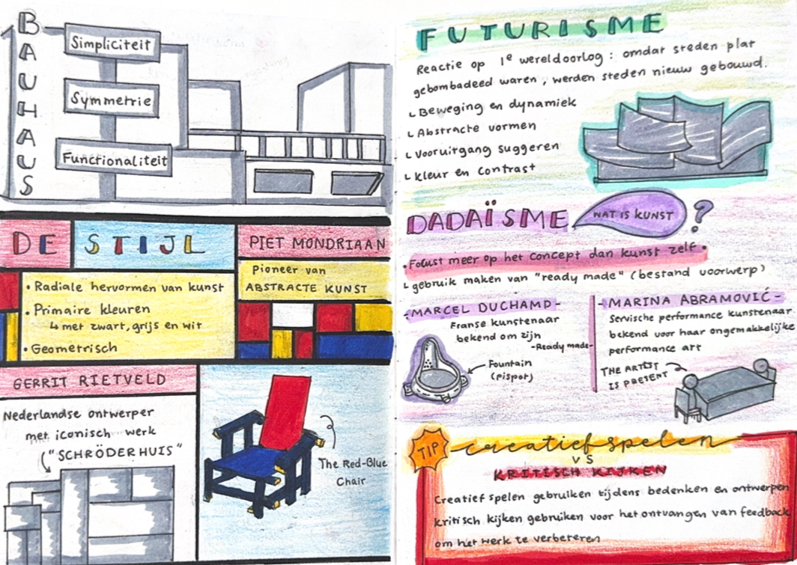
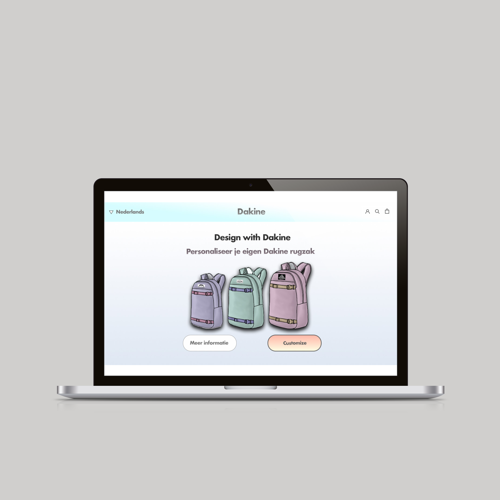
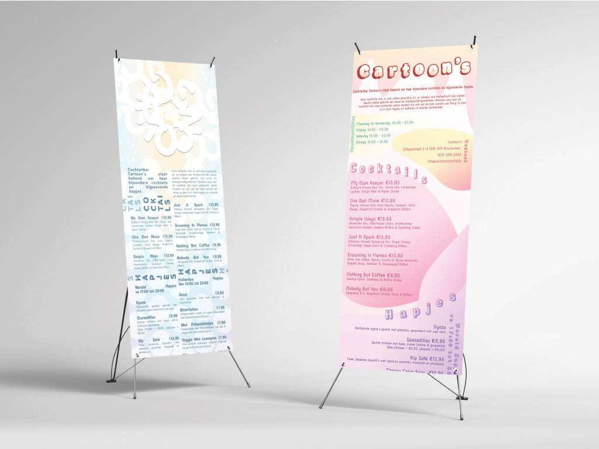
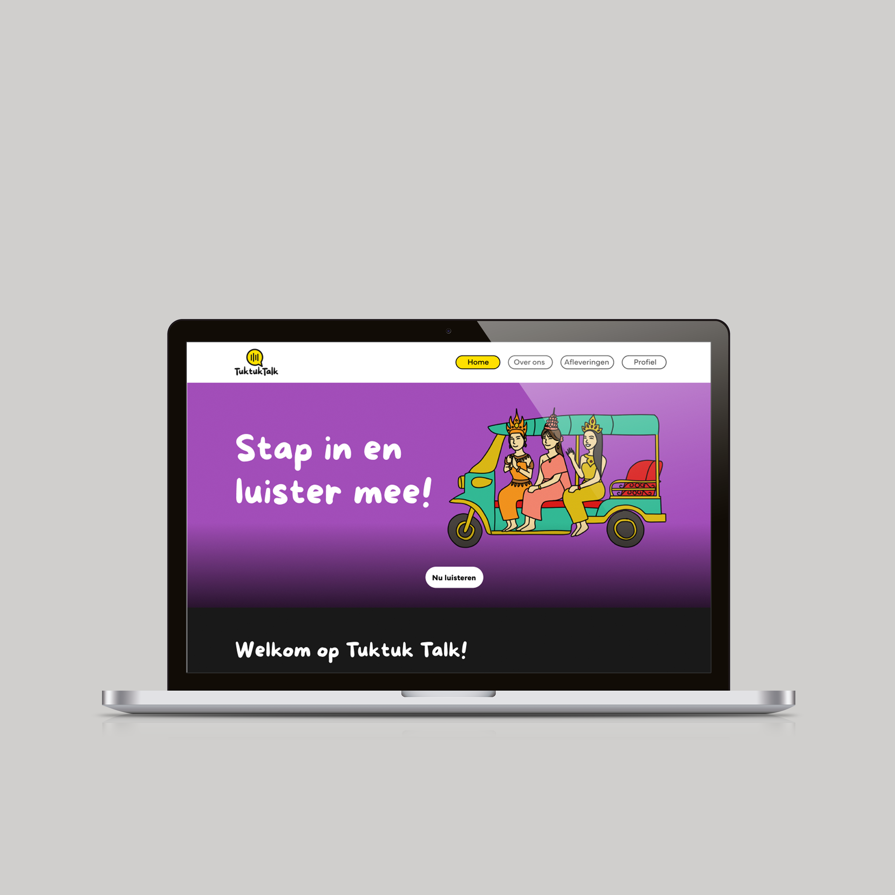
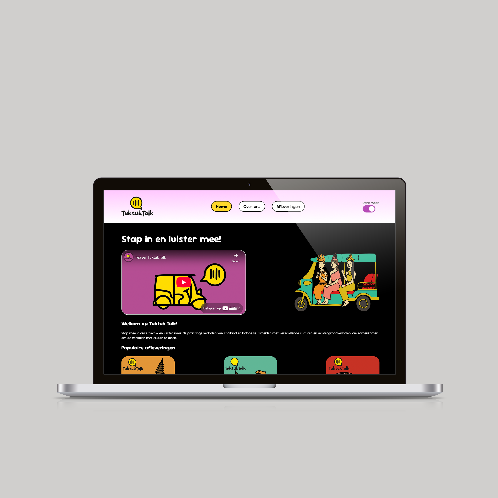
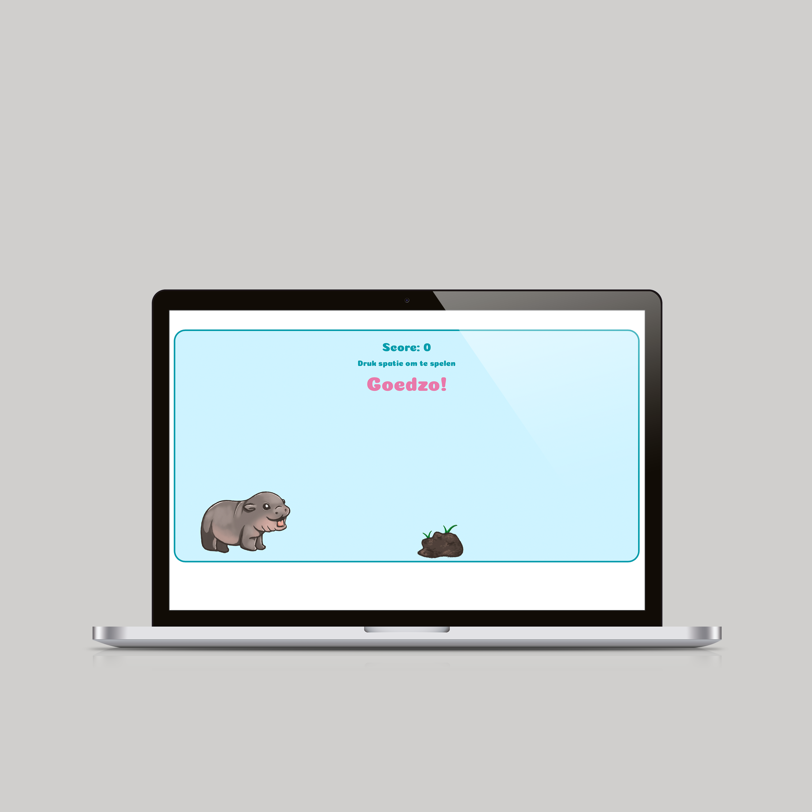
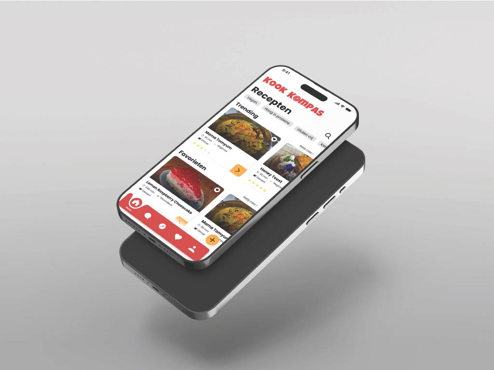
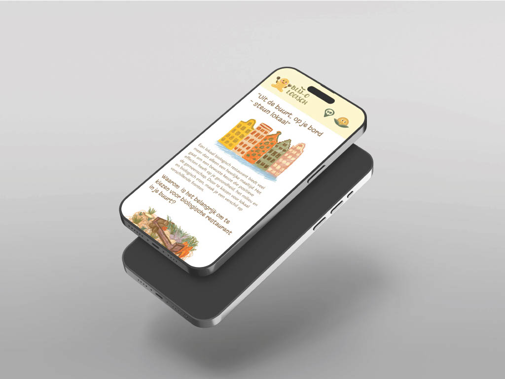
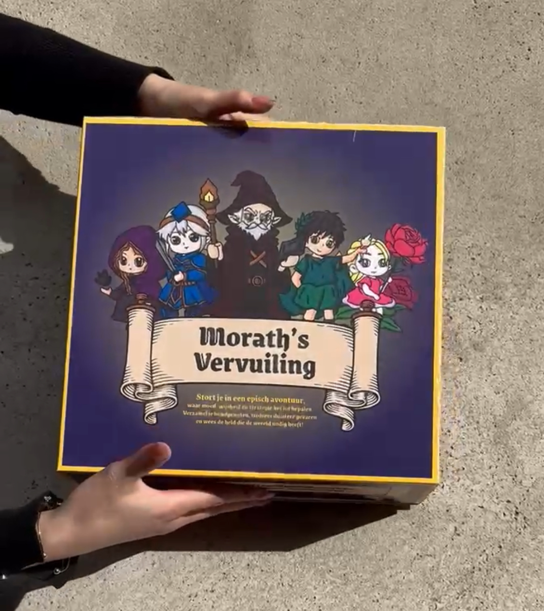

Ontwerpgeschiedenis: Sketchnotes maken van podcast luisterenHoi! Ik ben Piyathida, welkom op mijn online portfolio!
Ik ben een eerstejaars student Communication and Multimedia Design aan de Hogeschool van Amsterdam. Op deze website laat ik je zien wat ik tot nu toe heb gemaakt. Je vindt hier verschillende projecten die ik in mijn eerste jaar heb gedaan. Elk project is een combinatie van mijn creatieve ideeën en de nieuwe dingen die ik leer.
Bekijk mijn werk en ontdek wat ik allemaal heb ontworpen!
Mijn werk in het eerste jaar

HCI: Dakine rugzak website
Vormgeving: Cocktailbar one pager in eigen stijl
Content: Prototypen maken van podcast website “Tuktuk Talk”
Internetstandaarden: Programmeren van podcast website “Tuktuk talk”
Inleidingprogrammeren: Game maken met JavascriptProjecten in het eerste jaar

Project Team 1 Heel Holland Kookt: Prototype een recepten app ontwerpen
Project Individueel 1 De Lieve Groene Stad: Programmeren een website over een initiatief in Amsterdam voor telefoon
Project Team 2 Het Passie Project: Fysieke prototypen maken in het Makerslab